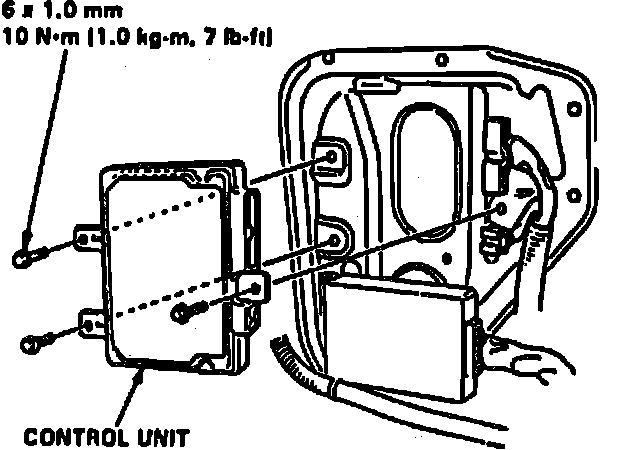
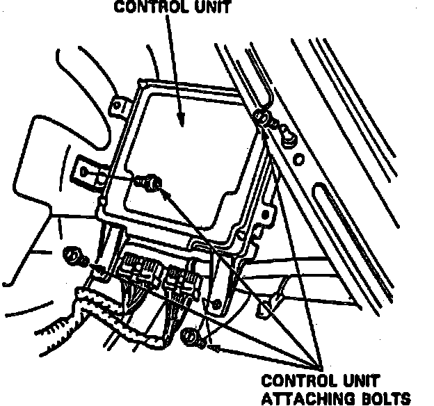
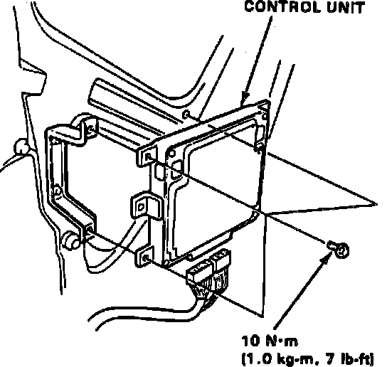

Electronic Brake Control Module: Service and Repair
Fig. 74 Control Unit Replacement:

Fig. 75 Control Unit Replacement:

Fig. 76 Control Unit Replacement:

1. Remove rear seat back.
2. Remove control unit attaching bolts, Figs. 74 through 76, caution should be taken when removing control unit.
3. Control unit memory is cleared when bolts are removed. Handle with care.
4. Reverse procedure to install. Torque control unit attaching bolts to 7 ft. lbs. Check anti-lock warning indicator by turning ignition to the ``On'' position.